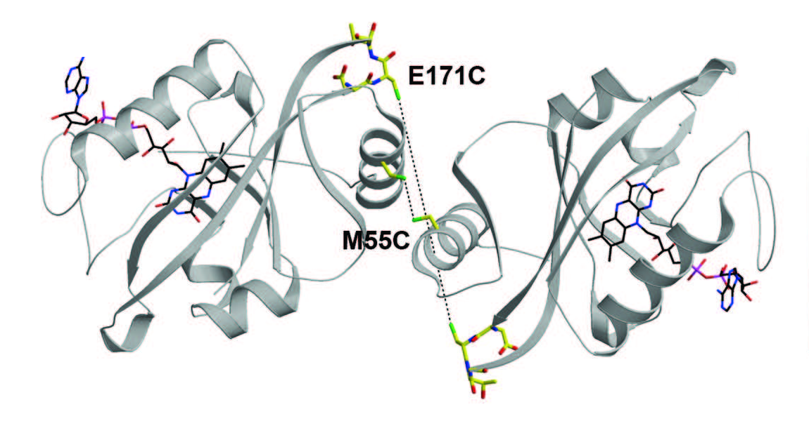
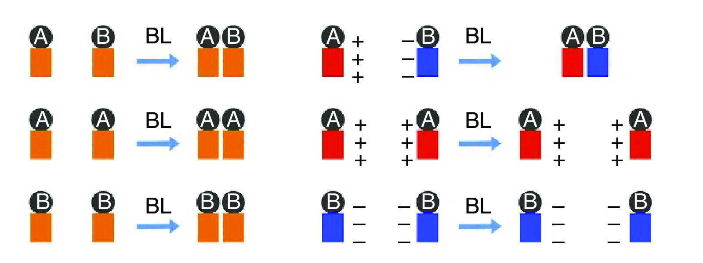
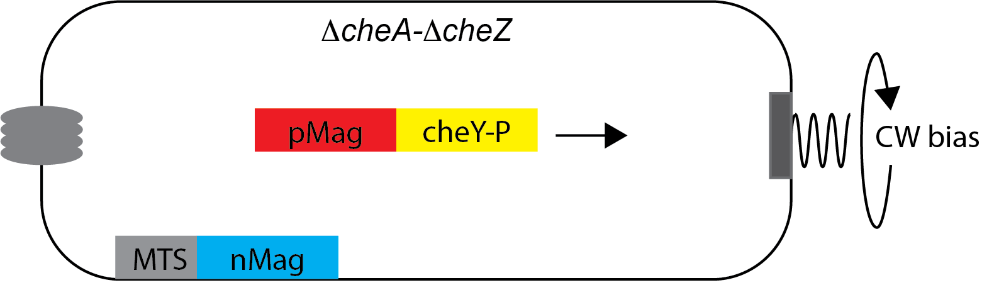
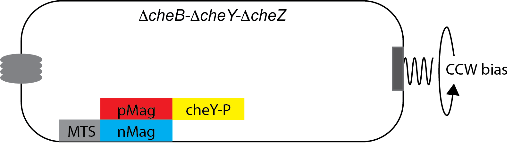

https://bit.ly/AlinaSamuelLab
Bacterial chemotaxis
Aravi Samuel

Howard Berg (1934-2021)
._Natuurkundige_te_Delft_Rijksmuseum_SK-A-957.jpeg)
"In the year 1657, I discovered very small creatures living in rainwater."
Anthony von Leeuwenhoek
1632-1723
Delft, Dutch Republic
Escherichia coli
Size matters

Comparison of the size of man, E. coli, and part of its flagellar motor.
Biased random walks

Wild-type E. coli cell executing a random walk in a homogeneous medium.
Planar projections of a 3D track
Flagella rotate


CCW rotation → run
CW rotation → tumble
"If bacterial flagella rotate, the structures at the base of the flagellum
deserve more attention than they have received thus far."
-Howard Berg
The impulse response

Change in CCW bias in response to attractant puff
Small change in 'fraction of bound receptor'
(0.0042)
↓
Large change in bias
(0.23)
Perfect adaptation
and
High gain
Signal transduction

increase [cheY-P] → increase CW bias
decrease [cheY-P] → decrease CW bias
Signal transduction observed

Sourjik and Berg, 2002
An ultrasensitive motor

solved a puzzle of gain
created a puzzle of tuning
Cluzel et al. 2000
An adaptive motor

solved a puzzle of gain
created a puzzle of tuning
Yuan et al. 2012
An optogenetic inspiration

Boyden, 2012
Optogenetic control of bias

Start with high bias
Optogenetic control of bias

Flash → End with low bias
Optogenetic control of bias

Start with low bias
Optogenetic control of bias

Flash → End with high bias
Optogenetic protein dimerization
 Light-induced conformational change near flavin
of N-terminal cap of fungal photoreceptor Vivid
→ dimerization
Zoltowski et al 2008
Optogenetic magnets
 Protein engineering of electrostatic interactions creates
blue light-activated positive and negative "magnets"
Kawano et al 2015
Lower [CheY-P] by sequestration
Active cheY-P pool in the cytoplasm → CW bias
Lower [CheY-P] by sequestration
Flash → inactive pool is sequestered
Optogenetic protein uncaging

Photoexcitation of Avena sativa phototropin 1 induces
displacement and unfolding of J$\alpha$ domain
Strickland et al 2010
Caged CheY

Inactive cheY-P pool caged by optogenetic protein
Caged CheY

Flash → Uncaged cheY-P → CW bias
CheY - pMag - mYPET
mScarlet - nMag - CAD
CAD domains will form a dodecameric sequestering scaffold

Light-activated dimerization
Light-activated dimerization → sequestration → lower CW bias
AsLOV2 - FliM - CheY
Light-activated uncaging → higher CW bias
Motivation

"Is any of this knowledge practical? The reading of the external environment by cells of all types, leading to responses in growth or motility, is fundamental to life. Bacterial chemotaxis provides a model for learning how such processes can work. However this is not what has motivated me. I have wanted to know, simply, how such a tiny creature does its thing. How, for example, has it solved the problem of finding greener pastures within the constraints imposed by physics? This is a matter of curiosity. Curiosity is the driving force of basic science."
-Howard Berg
Acknowledgments

Alina Vrabioiu

Gabriel Hosu

Rowland Institute at Harvard
References
E. S. Boyden, “A history of optogenetics: The development of tools for controlling brain circuits with light,” F1000 biology reports, vol. 3, pp. 11–11, 2011.
P. Cluzel, M. Surette, and S. Leibler, “An ultrasensitive bacterial motor revealed by monitoring signaling proteins in single cells,” Science, vol. 287, no. 5458, pp. 1652–1655, 2000.
J. C. Deme, S. Johnson, O. Vickery, A. Muellbauer, H. Monkhouse, T. Griffiths, R. H. James, B. C. Berks, J. W. Coulton, P. J. Stansfeld, and S. M. Lea, “Structures of the stator complex that drives rotation of the bacterial flagellum,” Nature Microbiology, vol. 5, no. 12, pp. 1553–1564, 2020.
B. G. Hosu, V. S. J. Nathan, and H. C. Berg, “Internal and external components of the bacterial flagellar motor rotate as a unit,” Proceedings of the National Academy of Sciences, vol. 113, no. 17, pp. 4783–4787, 2016.
F. Kawano, H. Suzuki, A. Furuya, and M. Sato, “Engineered pairs of distinct photoswitches for optogenetic control of cellular proteins,” Nature Communications, vol. 6, no. 1, pp. 6256– 6256, 2015.
J. A. Owen and J. M. Horowitz, “Size limits the sensitivity of kinetic schemes,” Nature Communications, vol. 14, no. 1, pp. 1280–1280, 2023.
M. Santiveri, A. Roa-Eguiara, C. Kühne, N. Wadhwa, H. Hu, H. C. Berg, M. Erhardt, and N. M. Taylor, “Structure and function of stator units of the bacterial flagellar motor,” Cell, vol. 183, no. 1, 244–257.e16, 2020.
D. Strickland, X. Yao, G. Gawlak, M. K. Rosen, K. H. Gardner, and T. R. Sosnick, “Rationally improving LOV domain-based photoswitches,” Nature Methods, vol. 7, no. 8, pp. 623–626, 2010.
A. J. Wolfe and H. C. Berg, “Migration of bacteria in semisolid agar,” Proceedings of the National Academy of Sciences, vol. 86, no. 18, pp. 6973–6977, 1989.
J. Yuan, R. W. Branch, B. G. Hosu, and H. C. Berg, “Adaptation at the output of the chemotaxis signalling pathway,” Nature, vol. 484, no. 7393, 233–U115, 2012.
B. D. Zoltowski and B. R. Crane, “Light Activation of the LOV Protein Vivid Generates a Rapidly Exchanging Dimer,” Biochemistry, vol. 47, no. 27, pp. 7012–7019, 2008.